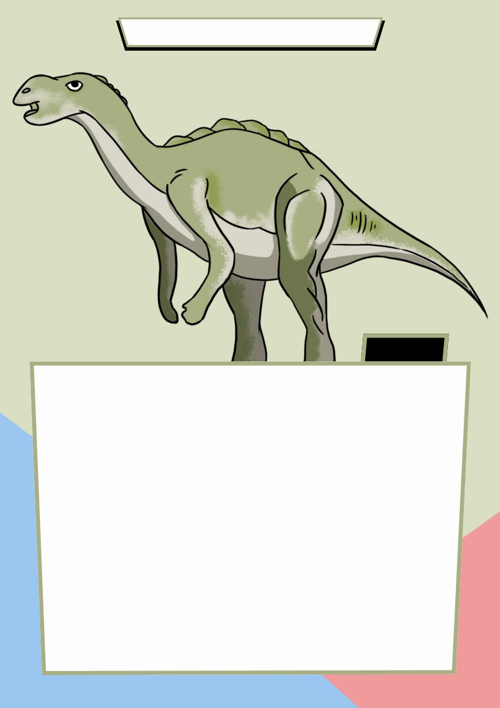

MUTTABURRASAURUS
FACT
Named after the town of Muttaburra in central Queensland, Muttaburrasaurus
l
angdoni was discovered by local grazier Doug Langdon, for whom the
dinosaur is named. Muttaburrasaurus lived around 100 million years ago,
during the Cretaceous period. It was a herbivore, with rows of grinding teeth.
Several specimens of this dinosaur have been found in central and northern
Queensland, and a few teeth have been found in New South Wales.
Muttaburrasaurus was about 7m long, and probably ate plants such as ferns,
cycads and con
i
f
ers. It may have lived in herds.
I
NTERESTINGFACTS: Muttaburrasaurus had a large bulge on its long snout
between its eyes and its mouth, a beak, a flattened thumb spike, hoof-like
claws, and teeth that worked like shears. The bony bump on its snout may have
been associated with its sense of smell or its ability to make sounds. It could
probably walk on two or four legs.